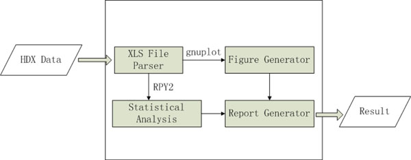

SAES
SARS (Statistical Analysis of Real-time pcr Software) is an RPY
package for statistical analysis of real-time PCR, implementing
the previous algorithms published in our lab. The SARS package
is still under peer review. Once it is accepted for publication,
it will be available. For our previous publication on statistical
analysis of real-time PCR, please click here and here.